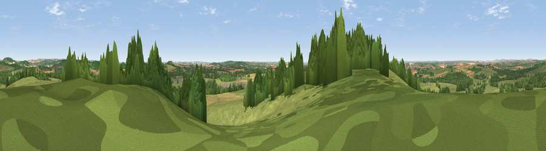

Viewpoint near Shipton Bellinger
#14328 in England · top 16% of its area beats it · near Shipton BellingerThe view, rendered

A 360° render of this exact spot computed from the terrain model, tree cover and land cover — summer colours, afternoon light, calibrated against photographs of famous viewpoints. Real trees, hedges and buildings will differ in detail.
The panorama
Grey silhouette: terrain skyline in each direction (720 bearings, Earth curvature and refraction included). Dashed green: skyline with trees (+15 m) and buildings (+8 m) as obstacles. Blue strip: how far the ground is visible on each bearing.
Where the view opens
Wedge length = distance to the farthest visible ground on that bearing (vegetation-aware). Rings at 10, 25 and 50 km.
What fills the view
60% grassland · 23% woodland · 15% cropland · 1% built-up
Angular shares of the visible panorama (visual magnitude), not map area. Landscape diversity 0.43 (0–1 Shannon).
Key numbers
More beautiful places nearby
The staircase of upgrades: each row has a higher view potential than everything closer. Driving times are estimates from straight-line distance, calibrated against real road routing — check an actual route before setting out.
| Place | Direction | Drive | Score |
|---|---|---|---|
| Viewpoint near Cholderton | WSW · 1 km | ~3 min | 61.6 |
| Viewpoint near Bulford | SW · 2 km | ~6 min | 70.3 |
| Viewpoint near Oare | NNW · 19 km | ~33 min | 72.9 |
| Martinsell viewpoint | N · 20 km | ~33 min | 77.3 |
| Viewpoint near Berwick St John | SW · 37 km | ~56 min | 78.2 |
| Viewpoint near Buriton | ESE · 56 km | ~78 min | 80.0 |
| Tennyson Down | S · 60 km | ~83 min | 83.2 |
| Viewpoint near Brook | SSE · 61 km | ~84 min | 84.2 |
51.19865, -1.69904 · source: screening · position refined by local search. Computed location — check access rights before visiting.